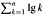

|
|
< Day Day Up > |
|
In a comparison sort, we use only comparisons between elements to gain order information about an input sequence 〈a1, a2, . . ., an〉. That is, given two elements ai and aj, we perform one of the tests ai < aj, ai ≤ aj, ai = aj, ai ≥ aj, or ai > aj to determine their relative order. We may not inspect the values of the elements or gain order information about them in any other way.
In this section, we assume without loss of generality that all of the input elements are distinct. Given this assumption, comparisons of the form ai = aj are useless, so we can assume that no comparisons of this form are made. We also note that the comparisons ai ≤ aj, ai ≥ aj, ai > aj, and ai < aj are all equivalent in that they yield identical information about the relative order of ai and aj. We therefore assume that all comparisons have the form ai ≤ aj.
Comparison sorts can be viewed abstractly in terms of decision trees. A decision tree is a full binary tree that represents the comparisons between elements that are performed by a particular sorting algorithm operating on an input of a given size. Control, data movement, and all other aspects of the algorithm are ignored. Figure 8.1 shows the decision tree corresponding to the insertion sort algorithm from Section 2.1 operating on an input sequence of three elements.

In a decision tree, each internal node is annotated by i: j for some i and j in the range 1 ≤ i, j n, where n is the number of elements in the input sequence. Each leaf is annotated by a permutation 〈π(1), π(2), . . ., π(n)〉. (See Section C.1 for background on permutations.) The execution of the sorting algorithm corresponds to tracing a path from the root of the decision tree to a leaf. At each internal node, a comparison ai aj is made. The left subtree then dictates subsequent comparisons for ai aj, and the right subtree dictates subsequent comparisons for ai > aj. When we come to a leaf, the sorting algorithm has established the ordering aπ(1) aπ(2) ··· aπ(n). Because any correct sorting algorithm must be able to produce each permutation of its input, a necessary condition for a comparison sort to be correct is that each of the n! permutations on n elements must appear as one of the leaves of the decision tree, and that each of these leaves must be reachable from the root by a path corresponding to an actual execution of the comparison sort. (We shall refer to such leaves as "reachable.") Thus, we shall consider only decision trees in which each permutation appears as a reachable leaf.
The length of the longest path from the root of a decision tree to any of its reachable leaves represents the worst-case number of comparisons that the corresponding sorting algorithm performs. Consequently, the worst-case number of comparisons for a given comparison sort algorithm equals the height of its decision tree. A lower bound on the heights of all decision trees in which each permutation appears as a reachable leaf is therefore a lower bound on the running time of any comparison sort algorithm. The following theorem establishes such a lower bound.
Any comparison sort algorithm requires Ω(n lg n) comparisons in the worst case.
Proof From the preceding discussion, it suffices to determine the height of a decision tree in which each permutation appears as a reachable leaf. Consider a decision tree of height h with l reachable leaves corresponding to a comparison sort on n elements. Because each of the n! permutations of the input appears as some leaf, we have n! ≤ l. Since a binary tree of height h has no more than 2h leaves, we have
n! ≤ l 2h,
which, by taking logarithms, implies
|
h |
≤ |
lg(n!) |
(since the lg function is monotonically increasing) |
|
= |
Ω(n lg n) |
(by equation (3.18)). |
Heapsort and merge sort are asymptotically optimal comparison sorts.
Proof The O(n lg n) upper bounds on the running times for heapsort and merge sort match the Ω(n lg n) worst-case lower bound from Theorem 8.1.
What is the smallest possible depth of a leaf in a decision tree for a comparison sort?
Obtain asymptotically tight bounds on lg(n!) without using Stirling's approximation. Instead, evaluate the summation  using techniques from Section A.2.
Show that there is no comparison sort whose running time is linear for at least half of the n! inputs of length n. What about a fraction of 1/n of the inputs of length n? What about a fraction 1/2n?
You are given a sequence of n elements to sort. The input sequence consists of n/k subsequences, each containing k elements. The elements in a given subsequence are all smaller than the elements in the succeeding subsequence and larger than the elements in the preceding subsequence. Thus, all that is needed to sort the whole sequence of length n is to sort the k elements in each of the n/k subsequences. Show an Ω(n lg k) lower bound on the number of comparisons needed to solve this variant of the sorting problem. (Hint: It is not rigorous to simply combine the lower bounds for the individual subsequences.)
|
|
< Day Day Up > |
|